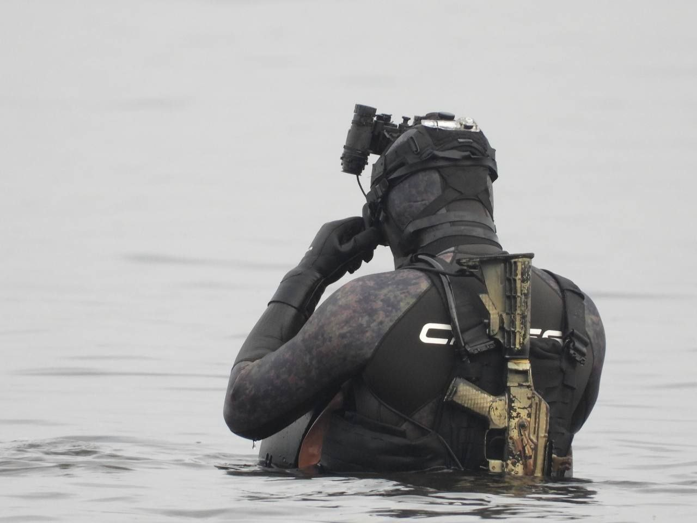
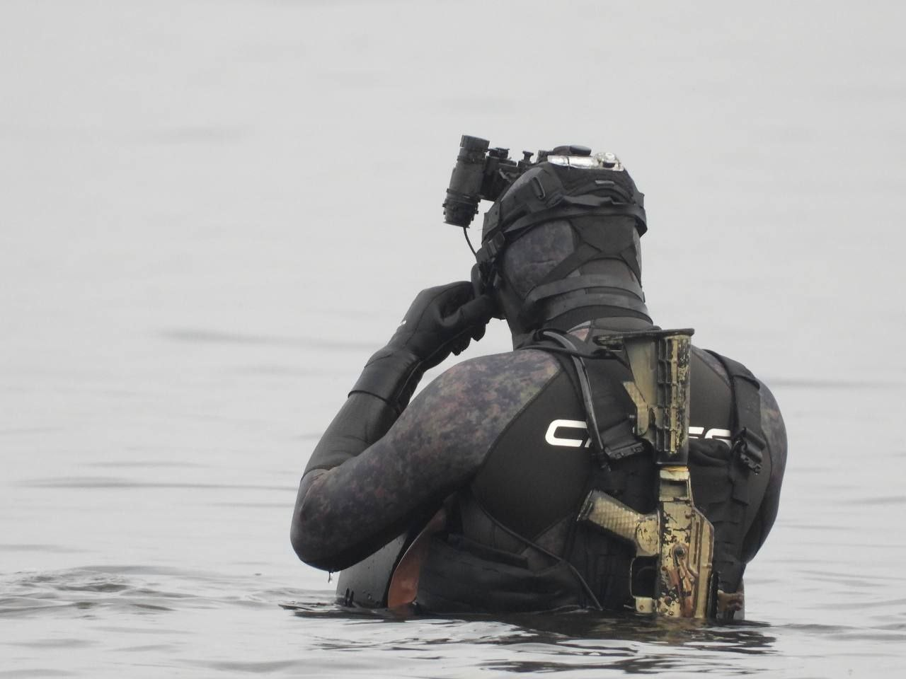
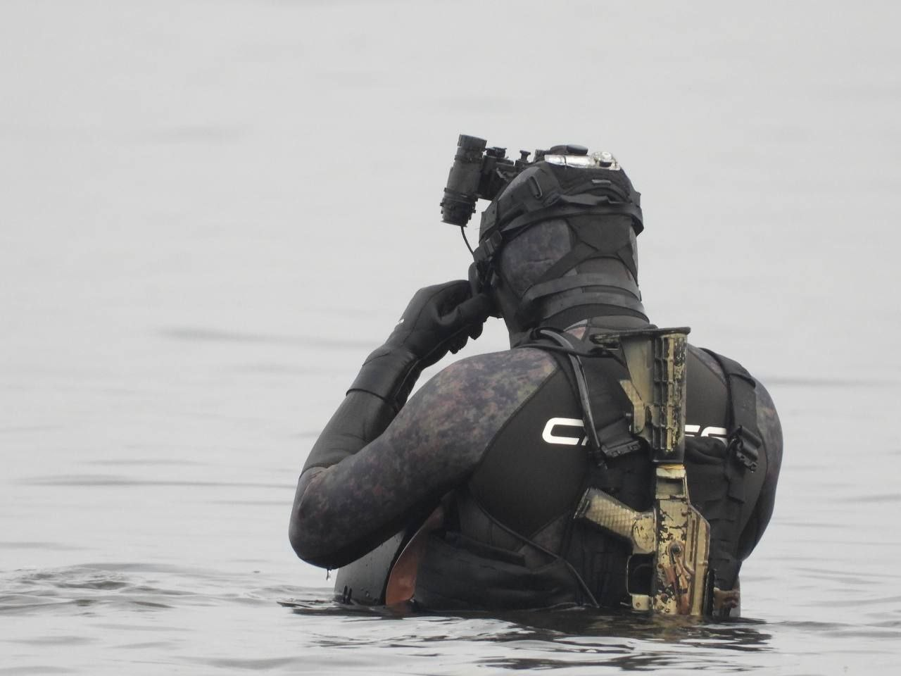

Killside is a community that unites people interested in the topic of the military. Community members are both operators of various law enforcement agencies and civilians who show interest in the topic.
The community was created on September 11, 2021. It got its development in the game known as Arma 3. Founders: olympia, cringe, lovely, jupiter. The community reached its greatest development in 2022, when most of the members of the Discord server already participated in the defense of the country.
After the death of Jupiter, the community began to gradually disband. Some participants still defended the territorial integrity of the country, while others engaged in aid. Finally, Killside ceased to exist as a full-fledged community on September 20, 2022.Individual members still represented the community. They finally ceased their activities on June 12, 2023, after the death of the founder under the call sign cringe. Today, only a few people have the rights to use the Killside brand: olympia, terror, a.a.jellin, mercyshka.
The Killside community is engaged in closed monitoring of enemy information. Close interaction with PSD, First Division, North Side communities. Community members are currently defending Ukraine on the battlefield. They are operators of such force structures as the 73rd SOF Regiment, the 8th SOF Regiment, the 3rd Separate Assault Brigade, the 79th Separate Assault Brigade.
